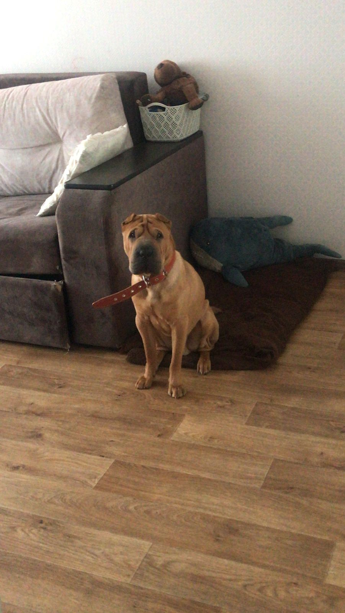

Шарпе́й (кит. 沙皮, пиньинь shāpí, палл. шапи, буквально: «песчаная шкура») — порода сторожевых и охотничьих, а в древности и бойцовых собак родом из Китая, одна из древнейших пород. Относится к типу молоссоподобных собак и известна такими отличительными чертами, как необычайно глубокие складки кожи и сине-чёрный язык. Активная и крепко сложенная собака среднего размера. Складки на черепе и плечах, маленькие уши и «гиппопотамья» морда придают шарпею уникальный вид. В 1978 году шарпей был занесён в «Книгу рекордов Гиннесса» как самая редкая в то время порода в мире.
В официальном стандарте породы 1981 года шарпей описывается словами:
Царственный, настороженный, умный, величественный, благородный, хмурый, мрачный и высокомерный.
Китайцы описывают эту собаку так:
Голова имеет форму груши или дыни.
Ухо подобно раковине морского моллюска, толстое и маленькое.
Физиономия напоминает морщинистое лицо пожилого человека.
Язык сине-чёрного цвета. Шея, как у бизона, сильная, средней длины с небольшим подгрудком.
Задние ноги мускулистые, толстые и прямые, передние — как у дракона, широко расставлены и подчёркивают широкую грудную клетку.
Спина, как у креветки, сильная и гибкая, без провалов за холкой. Хвост, как проволока, твёрдый и тонкий, высоко поставленный над спиной, с крутым завитком.
Пясть подобна головке чеснока — толстая, твёрдая, с пальцами, отходящими, как дольки чеснока.
Шерсть на ощупь жёсткая и колючая, похожа на шерсть лошади.
Внешность шарпея настолько экзотична, что у французов даже возникла поговорка:
Если вы идёте в гости и неосмотрительно берёте с собой шарпея, не удивляйтесь тому, что вас просто не заметят.

Живет он у меня 1,5 года за это время мы с ним очень подружились.
Сейчас он подрос и стал походить на собаку, а не на игрушку с супермаркета.
У него даже есть свой Tik-tok